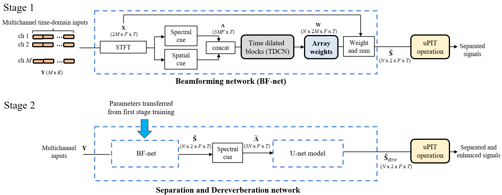

A Multichannel Learning-Based Approach for Sound Source Separation in Reverberant Environments
You-Siang Chen,Zi-Jie Lin, Mingsian R. Bai
Department of Power Mechanical Engineering Engineering, National Tsing Hua University, Taiwan
Abstract
In this paper, a multichannel learning-based network is proposed for sound source separation in reverberant field. The network can be divided into two parts according to the training strategies. In the first stage, time-dilated convolutional blocks are trained to estimate the array weights for beamforming the multichannel microphone signals. Next, the output of the network is processed by a weight-and-sum operation that is reformulated to handle real-valued data in the frequency domain. In the second stage, a U-net model is concatenated to the beamforming network to serve as a nonlinear mapping filter for joint separation and dereverberation. The scale invariant mean square error (SI-MSE) that is a frequency-domain modification from the scale invariant signal-to-noise ratio (SI-SNR) is used as the objective function for training. Furthermore, the combined network is also trained with the speech segments filtered by a great variety of room impulse responses. Simulations are conducted for comprehensive multisource scenarios of various subtending angles of sources and reverberation times. The proposed network is compared with several baseline approaches in terms of objective evaluation matrices. The results have demonstrated the excellent performance of the proposed network in dereverberation and separation, as compared to baseline methods.
Network arrchitecture

Audio Demo
(Six-channel uniform circular array)
Category A: T60s
Speech mixture (T60 = 0.16 s)
Speech mixture (T60 = 0.36 s)
Speech mixture (T60 = 0.61 s)
Speech mixture (T60 = 0.9 s)
WPE+MPDR (T60 = 0.16 s)
WPE+MPDR (T60 = 0.36 s)
WPE+MPDR (T60 = 0.61 s)
WPE+MPDR (T60 = 0.9 s)
WPE+TIKR (T60 = 0.16 s)
WPE+TIKR (T60 = 0.36 s)
WPE+TIKR (T60 = 0.61 s)
WPE+TIKR (T60 = 0.9 s)
WPE+IVA (T60 = 0.16 s)
WPE+IVA (T60 = 0.36 s)
WPE+IVA (T60 = 0.61 s)
WPE+IVA (T60 = 0.9 s)
Beam-TasNet (T60 = 0.16 s)
Beam-TasNet (T60 = 0.36 s)
Beam-TasNet (T60 = 0.61 s)
Beam-TasNet (T60 = 0.9 s)
The proposed approach (T60 = 0.16 s)
The proposed approach (T60 = 0.36 s)
The proposed approach (T60 = 0.61 s)
The proposed approach (T60 = 0.9 s)
Clean signals
Clean signals
Clean signals
Clean signals
Category B: subtending angles
Speech mixture (0-15)
Speech mixture (15-45)
Speech mixture (45-90)
Speech mixture (90-180)
WPE+MPDR (0-15)
WPE+MPDR (15-45)
WPE+MPDR (45-90)
WPE+MPDR (90-180)
WPE+TIKR (0-15)
WPE+TIKR (15-45)
WPE+TIKR (45-90)
WPE+TIKR (90-180)
WPE+IVA (0-15)
WPE+IVA (15-45)
WPE+IVA (45-90)
WPE+IVA (90-180)
Beam-TasNet (0-15)
Beam-TasNet (15-45)
Beam-TasNet (45-90)
Beam-TasNet (90-180)
The proposed approach (0-15)
The proposed approach (15-45)
The proposed approach (45-90)
The proposed approach (90-180)
Clean signals
Clean signals
Clean signals
Clean signals
Acknowledgements and fundings
The work was supported by the Add-on Grant for International Cooperation (MAGIC) of the Ministry of Science and Technology (MOST) in Taiwan, under the project number 107-2221-E-007 -039 -MY3.This grant made possible a three-month visit of Dr. Mingsian Bai to the LMS, FAU, Erlangen-Nuremberg.